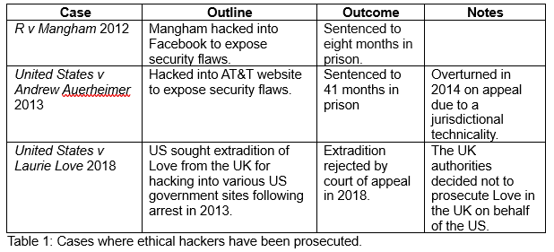

Both the BCS Code of Conduct and The ACM Code of Ethics and Professional Conduct place a high priority on acting in the ‘public interest’ (BCS) or for ‘public good’ (ACM). It’s interesting to note that in the context of this case study, adhering to these principles by writing and deploying malware, could potentially result in prosecution in the UK under the Computer Misuse Act (2016) and for any involved law enforcement, the Investigatory Powers Act (2016). Table 1 gives examples of cases where so called ‘ethical hackers’ have been prosecuted despite their defence of acting in the public good.
More recently, a German court convicted a security researcher who exposed a flaw in software they were testing for a client. Despite ethically disclosing the weakness to the software developer, they denied any security issues with their code. As a result, the researcher went public and the developers reported them to the police (Gooding, 2024).
As discussed by Joy in her response to my initial post, there are clear contradictions between ethical and legal obligations for security researchers. The UK government has now recognised this issue and has proposed an amendment to the Product Security and Telecommunications Infrastructure Act 2022 which will see the introduction of a defence in law for ‘ethical hacking’ (Clark, 2024).
Clark, A. (2024). Cybersecurity in the UK. Available from: https://researchbriefings.files.parliament.uk/documents/CBP-9821/CBP-9821.pdf [Accessed 17th May 2024].
Computer Misuse Act. (1990). United Kingdom. Available from https://www.legislation.gov.uk/ukpga/1990/18/contents [Accessed 17th May 1990].
Gooding, S. (2024). Ethical Hacking on Trial: German Court Fines Security Researcher for Reporting a Company's Data Vulnerabilities. Available from: https://socket.dev/blog/ethical-hacking-on-trial-german-court-fines-security-researcher [Accessed 17th May 2024].
Investigatory Powers Act 2016 (c. 25). (2016). United Kingdom. Available from: https://www.legislation.gov.uk/ukpga/2016/25/contents/enacted [Accessed 17th May 2024].